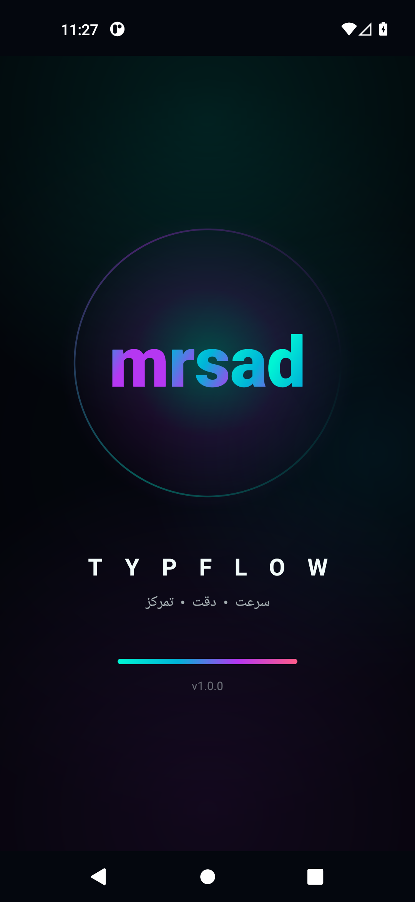
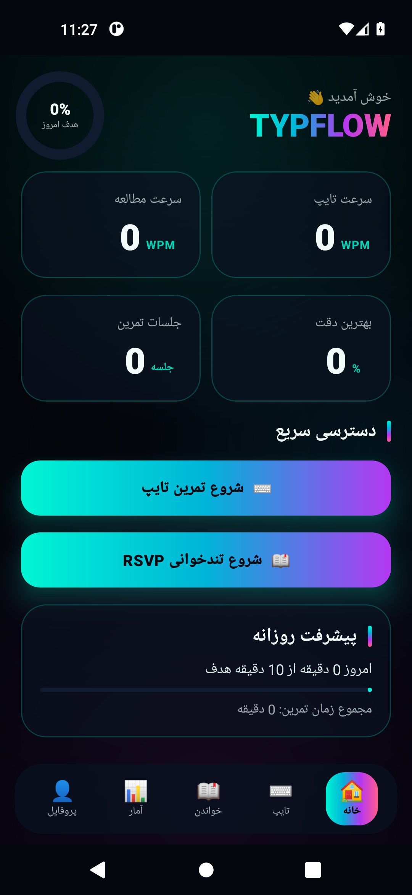
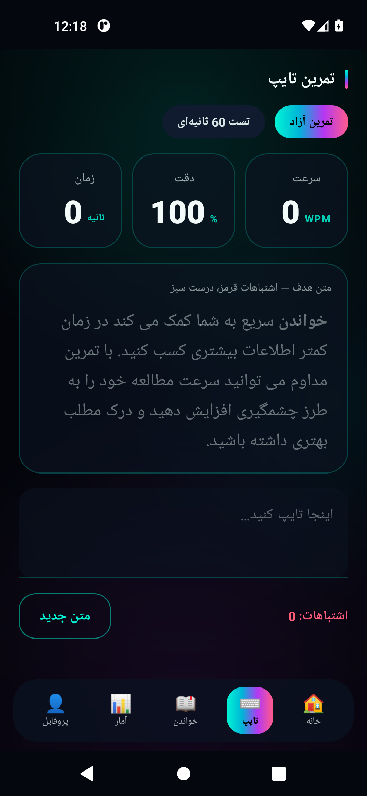
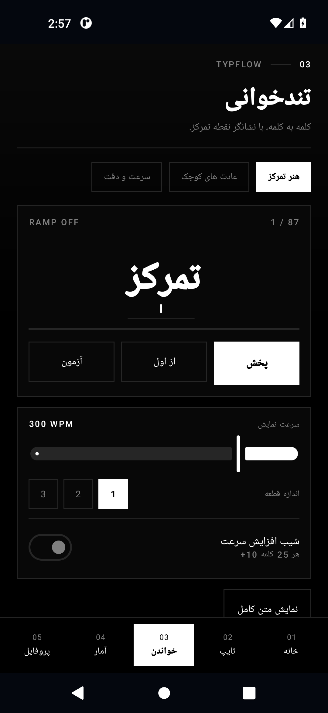
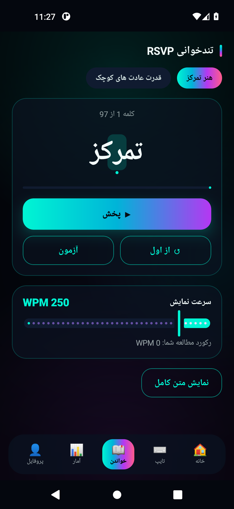
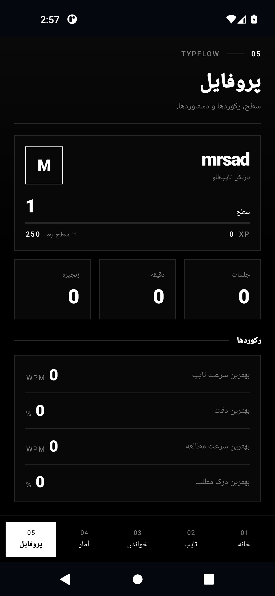
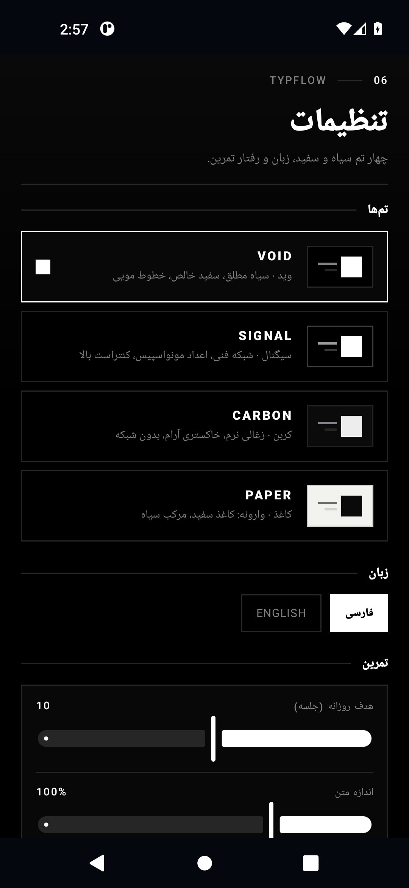
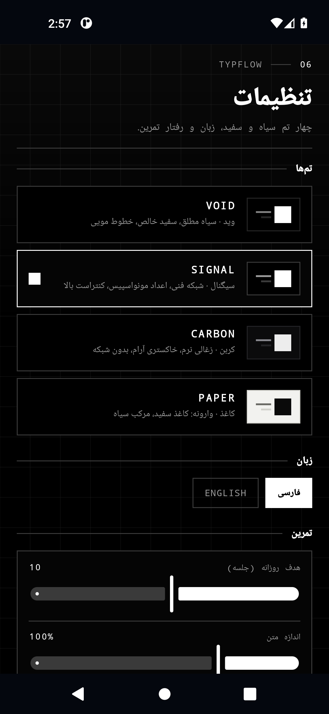
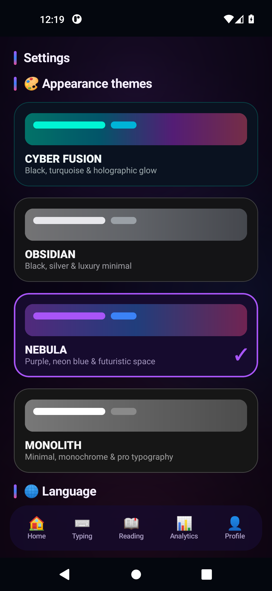

آزمون زماندار 15 / 30 / 60 / 120 S
چهار بازه زمانی بهعلاوه حالت آزاد، با تایمر زنده، نوار پیشرفت و کارت نتیجه.
تمرین تایپ سریع و تندخوانی، با طراحی سیاه و سفیدِ خام: خطوط مویی، اعداد بزرگ، چهار تم تکرنگ و ابزارهای واقعی سنجش سرعت و دقت. کاملاً آفلاین، بدون تبلیغ و بدون حساب کاربری.
هر قابلیت واقعی، محلی و قابل استفاده — بدون سرور.
چهار بازه زمانی بهعلاوه حالت آزاد، با تایمر زنده، نوار پیشرفت و کارت نتیجه.
متنهای فارسی و انگلیسی از کوتاه و ساده تا جملههای بلند با علائم.
هر متنی را بچسبان و همان را تمرین کن؛ روی دستگاه ذخیره میشود.
هر خطا به کلید هدف نسبت داده میشود و در آمار بهصورت نمودار میلهای میآید.
نمایش کلمهبهکلمه با نشانگر نقطه تمرکز، قطعههای ۱ تا ۳ کلمه و شیب افزایش خودکار سرعت.
برای هر متن سه پرسش چهارگزینهای؛ بهترین درصد درک مطلب ذخیره میشود.
روزهای پیوسته تمرین، تجربه، سطح و دوازده دستاورد تکرنگ.
بازخورد صوتی و لمسی هنگام تایپ، قابل خاموش کردن.
تفاوت تمها در کنتراست، شبکه و تایپوگرافی است — نه در رنگ.
گرفتهشده از اجرای همین APK روی شبیهساز اندروید، بدون رندر ساختگی.









دکمه DOWNLOAD APK را بزن و فایل TYPFLOW-1.1.0.apk را ذخیره کن.
اگر اندروید هشدار داد، برای مرورگر یا فایلمنیجر «نصب از منابع نامشخص» را فعال کن.
فایل را باز کن و Install را بزن؛ آیکون TYPFLOW در صفحه اصلی ظاهر میشود.